Omnissa Horizon 2503: Master RDS Host
Navigation
Use this post to build a Windows Server Remote Desktop Session Host (RDSH) that will be used as the source image for additional cloned Remote Desktop Session Hosts. Or you can build each Remote Desktop Session Host manually using the steps detailed in this post. Virtual Desktop is detailed in a separate article.
This post applies to all Horizon versions 2006 (aka 8.0) and newer.
- Change Log
- Hardware
-
Windows
- Disable Internet Explorer Enhanced Security Config
- Windows Update
- Local Administrators Group
- C: Drive Permissions
-
Omnissa Installs/Upgrades
- Dynamic Environment Manager (DEM) Agent
- Logon Monitoring
-
Remote Desktop Session Host
- Remote Desktop Licensing Configuration
- Antivirus
- Install Applications
- Microsoft FSLogix
- Why FSLogix?
- FSLogix Installation
- Windows OS Optimization Tool
- Seal and Snapshot
- Full Clone Post-Cloning Tasks
Change Log
- 2025 April 17 - Horizon Agent - updated for Horizon 2503 (8.15), DEM 2503, and OS Optimization Tool 2503.
- 2023 July 7 - added link to Omnissa 93158 Information about changes in logon timing data format in Horizon form Horizon 8 2111 and Later.
Hardware
- The session host pools will use the same hardware specs (e.g., vCPUs, memory size, network label) specified on the master session host. Adjust accordingly.
- Set the vCPUs to 8. Two is the minimum.
- Typical memory for an 8-vCPU session host is 24 - 48 GB (e.g., 32 GB).
- For New Hard disk, consider setting Thin provision. And increase the size so it can store the locally cached profiles (C:\Users).
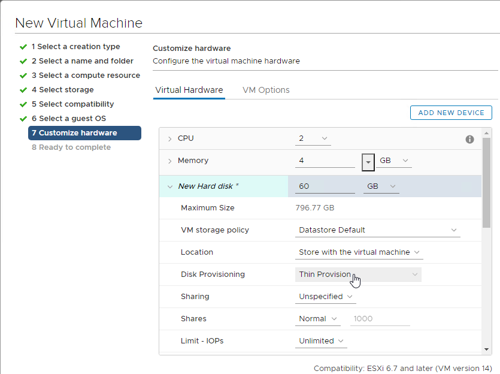
- The session host should be configured with a VMXNET 3 network adapter.
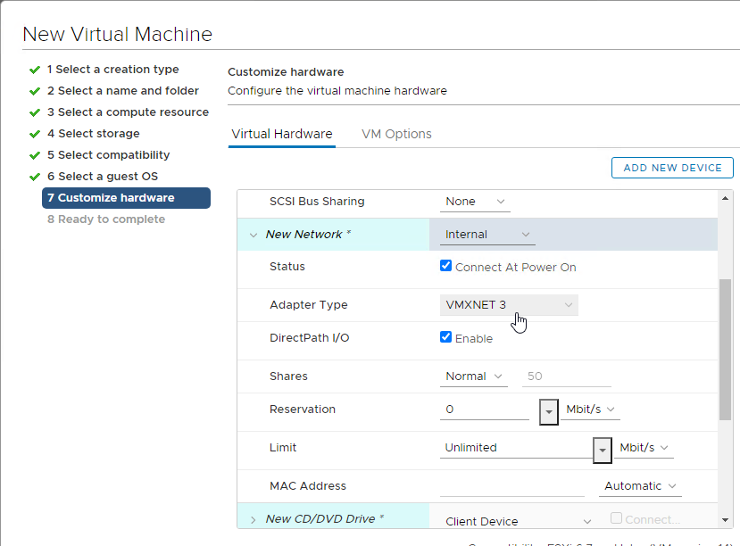
- When building the master session host, you will probably boot from an ISO. When you are ready to create the pool (RDS farm), ensure the CD/DVD drive points to Client Device, and is not Connected. The important part is to make sure ISO file is not configured.
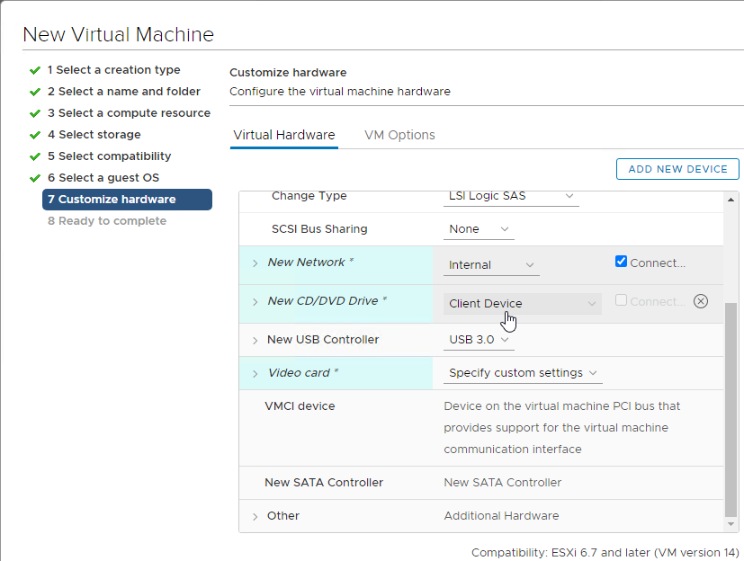
- There’s no need for the Floppy drive so remove it.
- If you have any Serial ports, remove them.
NIC Hotplug – Disable
- Users could use the systray icon to Eject the Ethernet Adapter. Obviously this is bad.
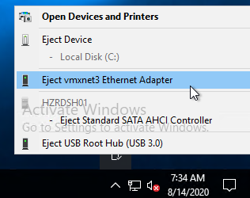
- To disable this functionality, power off the virtual machine.
- Once powered off, right-click the virtual machine, and click Edit Settings.
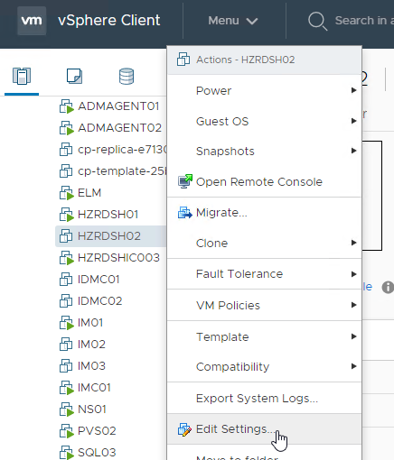
- On the VM Options tab, expand Advanced, and then click Edit Configuration.
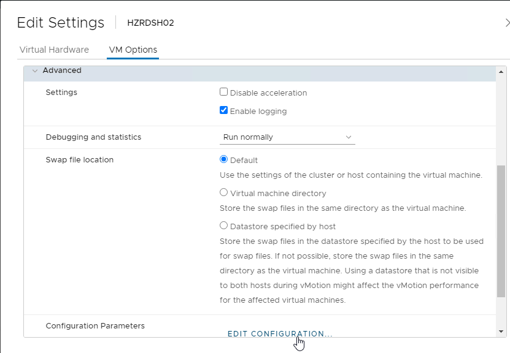
- Click Add Configuration Params.
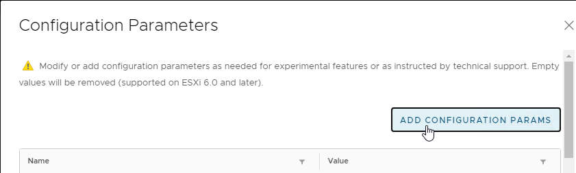
- On the left, enter devices.hotplug. On the right, enter false.
- Then click OK a couple times to close the windows.
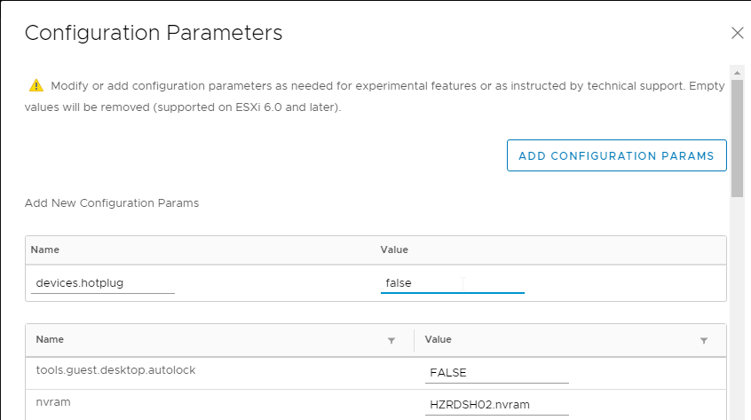
- The VM can then be powered on.
VMware Tools
See Omnissa Product Interoperability Matrices for supported versions of VMware Tools with different versions of Horizon Agent.
The latest versions of VMware Tools resolve security vulnerabilities.
VMware Tools includes the Shared Folders feature, which prevents roaming profiles from being deleted properly. When installing VMware Tools, make sure you deselect Shared Folders so it is not installed.
After installing VMware Tools, open Registry Editor and go to HKLM\SYSTEM\CurrentControlSet\Control\NetworkProvider\Order. Look in the ProviderOrder value on the right, and ensure that vmhgfs is not listed. If it is, remove it.
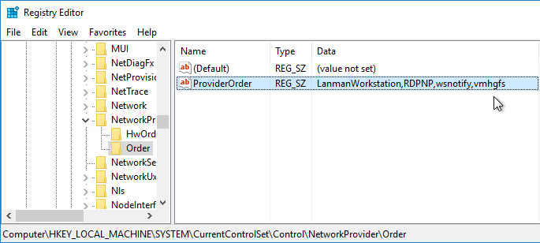
Windows
Disable Internet Explorer Enhanced Security Config
- In Server Manager, switch to the Local Server page.
- On the far right, click the link for On next to IE Enhanced Security Configuration.
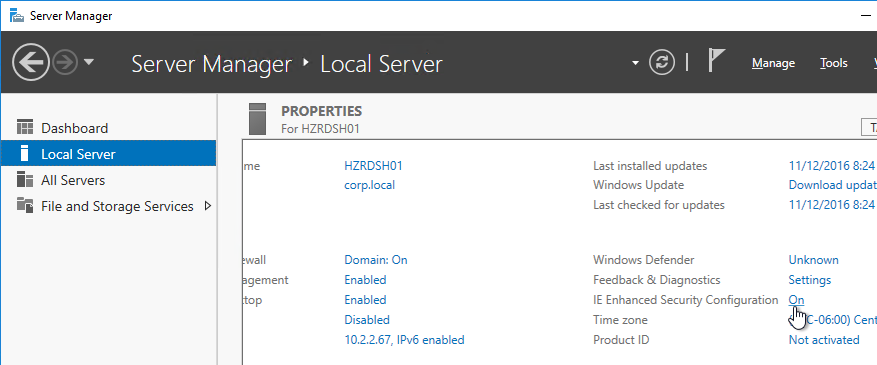
- Click Off for both Administrators and Users. Click OK.
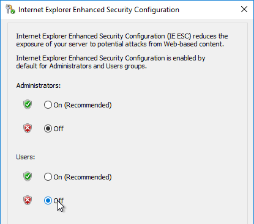
Windows Update
Whenever you deploy a virtual machine from a template and SysPrep is executed during the cloning process, all Windows Update settings are reset. You must reconfigure Windows Update on every new virtual machine (or use group policy).
- In Server Manager, click Local Server on the left. Then on the right, click the link for Last checked for updates.
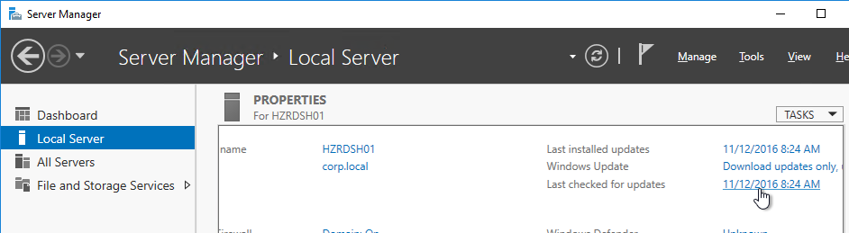
- Click Advanced Options.
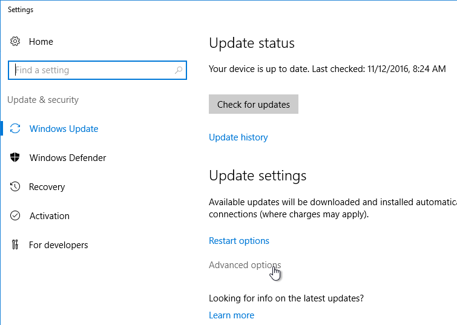
- Check the box next to Give me updates for other Microsoft products when I update Windows, and then click the back button. Then click Check for Updates.
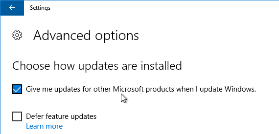
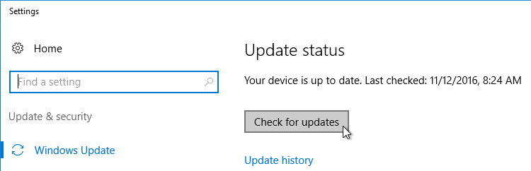
- Windows Update will automatically start checking for updates.
- Install any updates it recommends.
Local Administrators Group
Add your Horizon Admins group to the local Administrators group.
- In Server Manager, open the Tools menu, and click Computer Management. Or launch it by right-clicking the Start Button.
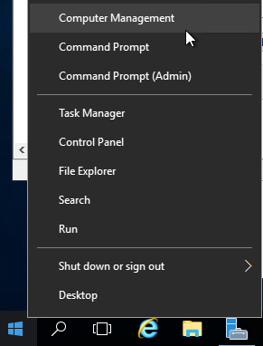
- Add the Horizon Admins group to the local Administrators group.
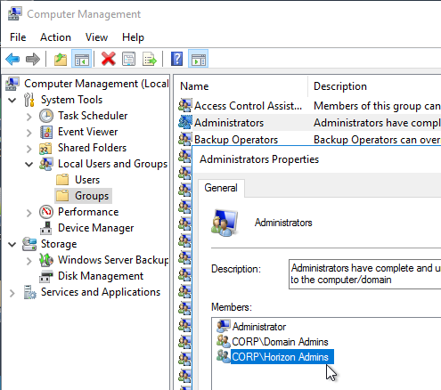
C: Drive Permissions
The default permissions allow users to store files on the C: drive in places other than their profile.
- Open the Properties dialog box for C:\.
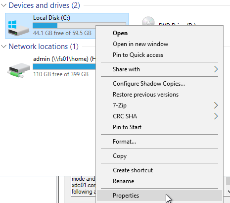
- On the Security tab, click Advanced.
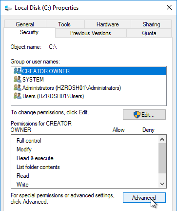
- Highlight the line containing Users with Create Folders permission, and click Remove.
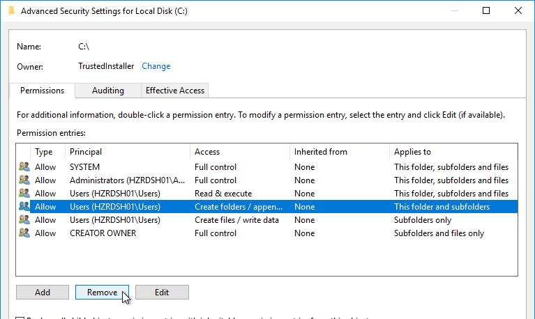
- Highlight the line containing Users with Create Files permission, and click Remove.
- Click OK to close the Advanced Security Settings window.
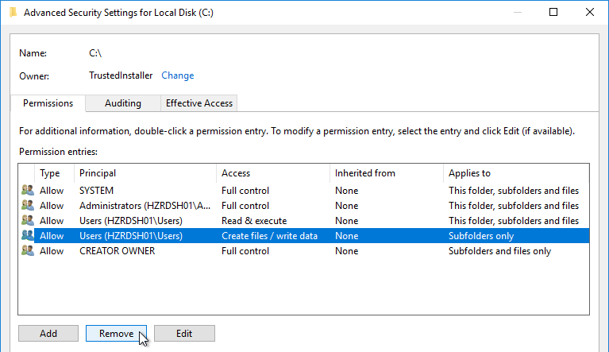
- Click Yes to confirm the permissions change.
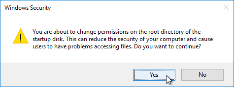
- If you see any of these Error Applying Security windows, click Continue.
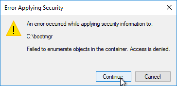
- Click OK to close the C: drive properties.
Installs
Install/Upgrade Horizon Agent
To install Horizon Agent on Remote Desktop Session Host (RDSH), do the following:
- Latency - In Horizon 2106 (8.3) and newer, maximum latency between Horizon Agent machine and Connection Server is 120ms. Older versions of Horizon have lower maximum latencies.
- Windows Server 2025 is supported in Horizon 2503 (8.15) and newer.
-
VMware Tools - install VMware Tools before you install Horizon Agent.
- If you need to update VMware Tools, uninstall Horizon Agent, upgrade VMware Tools, and then reinstall Horizon Agent.
- See Omnissa Product Interoperability Matrices for supported versions of VMware Tools with different versions of Horizon Agent.
- Download Horizon Agent 2503 (8.15)
- Run the downloaded Omnissa-Horizon-Agent-x86_64-2503-8.15.0.exe.
- If you want the URL Content Redirection feature, then you must run the Agent installer with the following switches:
/v URL_FILTERING_ENABLED=1. - If you want the UNC Path Redirection feature in 8.7 and newer, then you must run the Agent installer with the following switches:
/v ENABLE_UNC_REDIRECTION=1. You can combine the two switches.
- In the Welcome to the Installation Wizard for Omnissa Horizon Agent page, click Next.
- In Desktop OS Configuration page, select RDS Mode and click Next.
- Click OK to install the role.
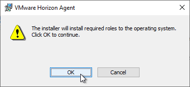
- Restart the machine.
- After restart, login, and re-run the Agent installer.
- In the Network protocol configuration page, select IPv4, and click Next.
-
In the Custom Setup page, several features are disabled by default. Horizon Smart Policies in Dynamic Environment Manager (DEM) can control some of these features but only if the features are installed.
-
USB Redirection is an option.
- If this RDS Host will be a master image for an Instant Clone farm, then install the Instant Clone Agent. For manual farms, don't select this feature.
- Scanner Redirection is an option. Note: Scanner Redirection will impact host density.
- Serial Port Redirection is an option.
- There's an option for Horizon Performance Tracker, which adds a program to the Agent machine that can show the user performance of the remote session. You can publish the Tracker.
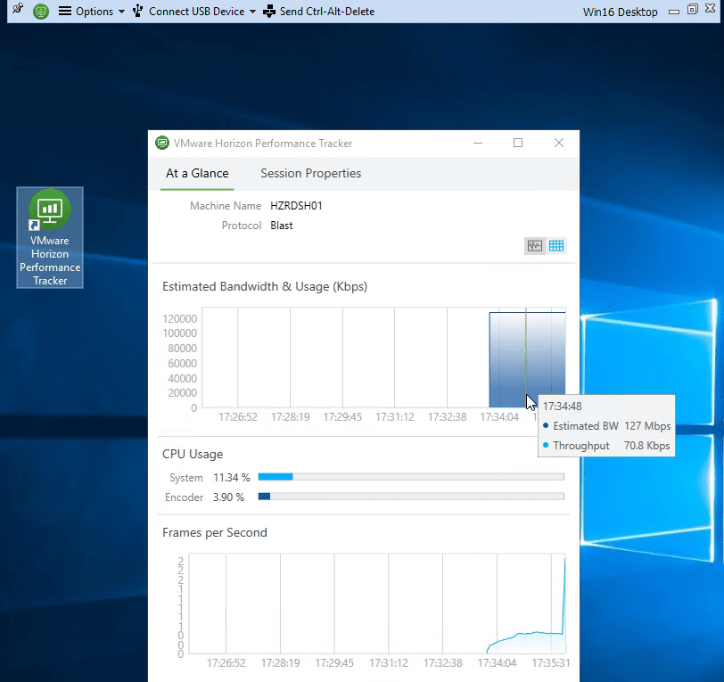
- In Horizon 2206 and newer, Storage Drive Redirection provides faster performance than Client Drive Redirection.
- Click Next when done making selections.
- Click OK to acknowledge the USB redirection message.
- If you see the Register with Horizon Connection Server page, enter the name of a Horizon Connection Server, and click Next. You only see this page if you deselected the Instant Clone Agent feature. Registration is necessary for Manual RDS Farms (no Instant Clones).
- In the Ready to Install the Program page, Horizon Agent 2306 and newer have an option to Automatically restart system on successful completion. Click Install.
- In the Installer Completed page, click Finish.
- Click Yes to restart the server.
- If you want to know what features were selected during installation, look in HKLM\Software\VMware, Inc.\Installer\Features_HorizonAgent. Or look in the installation log files as detailed at Paul Grevink View Agent, what is installed?
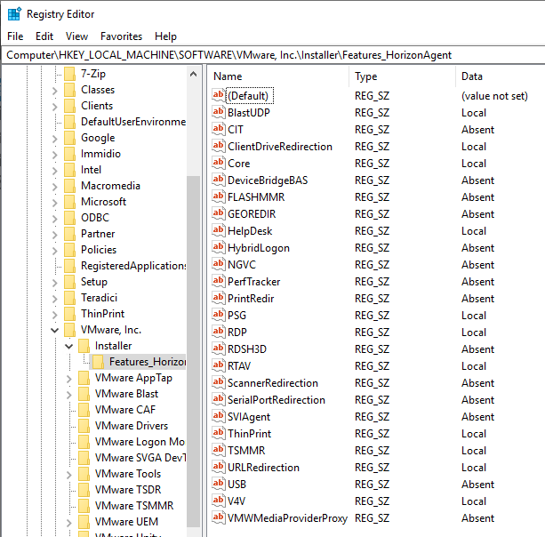
- To add features to an existing Horizon Agent installation, use the command line as detailed by Terence Luk at Add features to an existing VMware Horizon View 7.x Agent install.
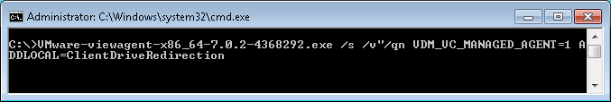
- To verify installation of the URL Content Redirection feature, check for the presence of C:\Program Files\VMware\VMware View\Agent\bin\UrlRedirection.
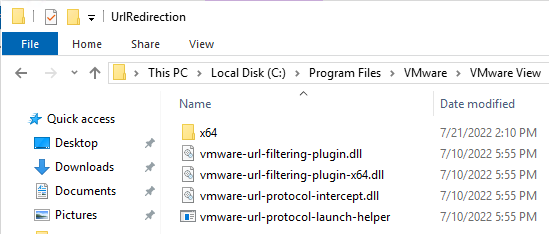
- There’s also an IE add-on.
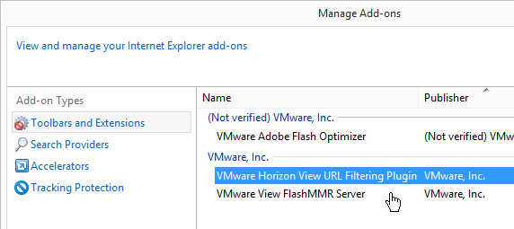
- URL Content Redirection is configured using group policy.
- To verify installation of the UNC Content Redirection feature, check for the presence of C:\Program Files\VMware\VMware View\Agent\bin\UncRedirection.
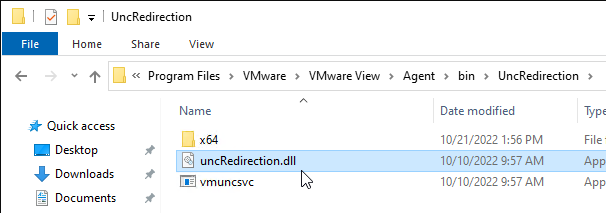


Install/Upgrade Dynamic Environment Manager (DEM) Agent
All editions of Horizon 2006 (8.0) and newer are entitled to Dynamic Environment Management (DEM).
- Horizon Standard Edition and Horizon Advanced Edition are entitled to DEM Standard Edition, which only has personalization features that replace Persona. If you are using FSLogix Profile Containers for profiles, then you probably don't need DEM Standard Edition.
- Horizon Enterprise Edition is entitled to DEM Enterprise Edition, which has all DEM features, including Smart Policies, Privilege Elevation, etc.
DEM 2006 and newer Agents (FlexEngines) require additional configuration to enable DEM Computer Settings. You can either configure registry settings on each DEM Agent machine, or in DEM Agent 2103 and newer you can use an installer command-line switch. Both are detailed at Perform Installation with Computer Environment Settings Support at Omnissa Docs.
- Group Policy Preferences can push these registry keys to the Horizon Agent machines. Or you can manually modify the registry in your master images. The minimum registry values are Enabled and ConfigFilePath as detailed at Perform Installation with Computer Environment Settings Support at Omnissa Docs. For the list of additional registry values, see FlexEngine Configuration for Computer Environment Settings at Omnissa Docs.
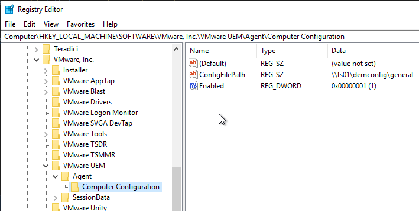
-
Command line install looks something like below. The command line installer switch sets the same ConfigFilePath and Enabled registry values as shown above.
msiexec /i "\\fs01\bin\Omnissa\DEM\Omnissa-DEM-Enterprise-2503-10.15\Omnissa Dynamic Environment Manager Enterprise 2503 10.15 x64.msi" /qn COMPENVCONFIGFILEPATH=\\fs01\DEMConfig\general

To install DEM Agent:
- Windows 10 Compatibility - See Omnissa 57386 Omnissa Dynamic Environment Manager and Windows 10 Versions Support Matrix
- Make sure Prevent access to registry editing tools is not enabled in any GPO since this setting prevents the FlexEngine from operating properly.
- DEM 2503 (10.15) is an ESB release.
- Based on your entitlement, download either DEM 2503 (10.15) Enterprise Edition. For ESB Horizon, download the DEM version included with your ESB version of Horizon.
- Run the extracted Omnissa Dynamic Environment Manager Enterprise 2503 10.15 x64.msi.
- In the Welcome to the Omnissa Dynamic Environment Manager Enterprise Setup Wizard page, check the box next to I accept and click Next.
- In the Destination Folder page, click Next.
- In Choose Setup Type page, click Custom.
- In the Custom Setup page, click Next. Note: the DEM Management Console is typically installed on an administrator's machine.
- In the Ready to install Omnissa Dynamic Environment Manager Enterprise page, click Install.
- In the Completed the Omnissa Dynamic Environment Manager Enterprise Setup Wizard page, click Finish.
-
If you have PCoIP Zero Clients that map USB devices (e.g. USB drives), then you might have to set the following registry value:
-
HKLM\Software\Omnissa\Omnissa VDM\Agent\USB
- UemFlags (DWORD) = 1
- DEM is enabled using Group Policy and configured using the DEM Management Console.
-
DEM can also be enabled without Active Directory (Group Policy); see Omnissa article 2148324 Configuring advanced UEM settings in NoAD mode for details.
-


Logon Monitoring
See Omnissa 93158 Information about changes in logon timing data format in Horizon form Horizon 8 2111 and Later.
By default, in services.msc, the VMware Horizon View Logon Monitor service is not running. Set it to Automatic and start it.
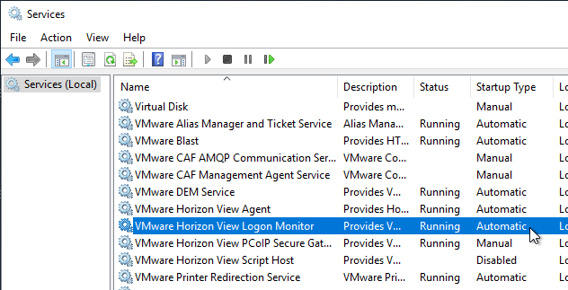
The logon logs are stored at C:\programdata\VMware\VMware Logon Monitor\Logs on each Horizon Agent.
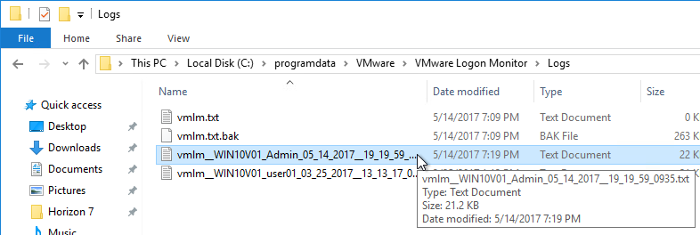
Inside each session log file are logon time statistics.
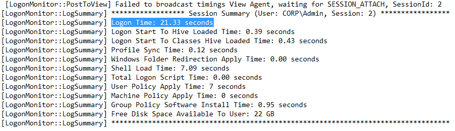
Remote Desktop Users
In Computer Management (compmgmt.msc), at Local Users and Groups > Groups, edit Remote Desktop Users and add a group like Domain Users. Users can't login to RDSH unless they are members of this local group. Instead of configuring this group manually on each parent image, you can also use Group Policy to configure it.
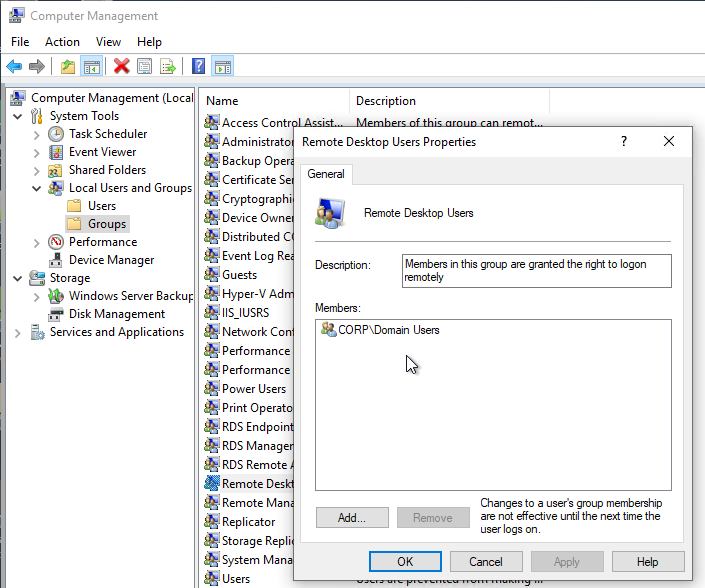
Remote Desktop Licensing Configuration
The only way to configure Remote Desktop Licensing in Windows Server 2012 and newer is using group policy (local group policy or domain group policy).
- For local group policy, run gpedit.msc.
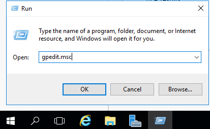
- Go to Computer Configuration > Administrative Templates > Windows Components > Remote Desktop Services > Remote Desktop Session Host > Licensing.
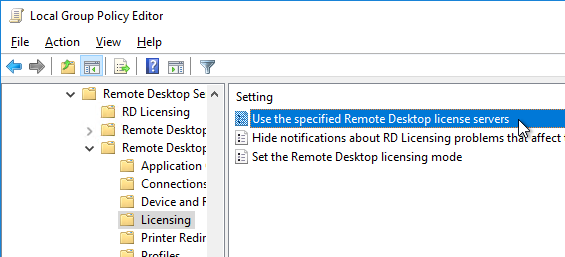
- Double-click Use the specified Remote Desktop license servers. Change it to Enabled, and enter the names of the Remote Desktop Licensing Servers. Click OK.
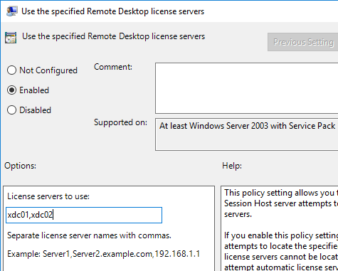
- Double-click Set the Remote Desktop licensing mode. Change it to Enabled, and select Per User. Click OK.
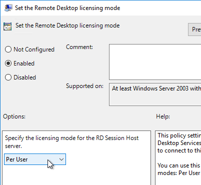
- In Server Manager, open the Tools menu, expand Remote Desktop Services, and click RD Licensing Diagnoser. If you don't see this option, then install it as a Windows Feature under RSAT.
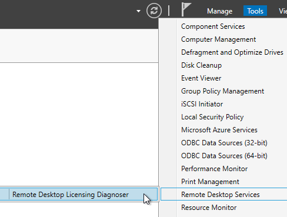
- The Diagnoser should find the license server and indicate the licensing mode. It’s OK if there are no licenses installed on the Remote Desktop License Server.
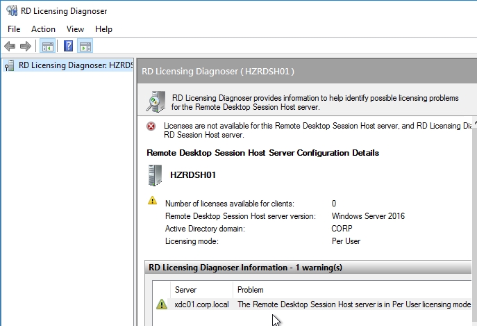
Antivirus
Omnissa Tech Zone Antivirus Considerations in a Horizon Environment contains exclusions for Horizon, App Volumes, Dynamic Environment Manager, ThinApp, etc.
Install antivirus using your normal procedure. Instructions vary for each Antivirus product.
Microsoft’s virus scanning recommendations (e.g. exclude group policy files) - http://support.microsoft.com/kb/822158.
Windows Defender Antivirus
Configuring Microsoft Defender Antivirus for non-persistent VDI machines - Microsoft Blog
Deployment guide for Windows Defender Antivirus in a virtual desktop infrastructure (VDI) environment - Microsoft Docs
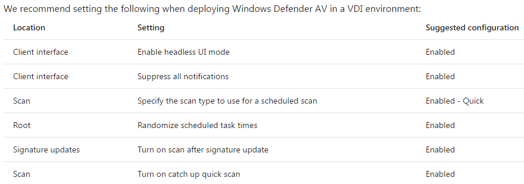
Onboarding and servicing non-persistent VDI machines with Microsoft Defender ATP

For Instant Clones, Defender ATP on-boarding script should run as ClonePrep post-sync script. See Tristan Tyson On-boarding VMware Horizon View Instant-Clone VDI Pools into Microsoft Defender Advanced Threat Protection.
Install Applications
Install applications that will be executed on these machines.
-
Choose installers that install to C:\Program Files instead of to %appdata%. Search for VDI or Enterprise versions of the following applications. These VDI versions do not auto-update so you'll have to update them manually.
- Google Chrome - Chrome Enterprise
- Microsoft Edge - Edge for Business
- Microsoft Teams - Teams for VDI
- Microsoft OneDrive - Install the sync app per machine
- Zoom - Zoom VDI
- WebEx - WebEx VDI
- Cisco Jabber - Jabber VDI
- Etc.
Omnissa Tech Zone Best Practices for Delivering Microsoft Office 365 In Horizon describes how to install Office365 ProPlus Click-to-run with Shared Computer Activation.
Microsoft FSLogix
Why FSLogix?
Microsoft FSLogix has two major features:
- Profile Container is an alternative to DEM Personalization.
- App Masking is an alternative to Omnissa App Volumes.
DEM has three categories of features: Personalization, User Settings, and Computer Settings. FSLogix Profile Container only replaces the Personalization feature set. You typically do FSLogix Profile Container for profiles and use DEM for User Settings and Computer Settings. Here are some advantages of DEM Profile Container over DEM Personalization:
- FSLogix Profile Container saves the entire profile but DEM Personalization requires you to specify each setting location that you want to save. FSLogix is "set and forget" while DEM Personalization requires tweaking for each application.
- At logon, DEM Personalization must download and unzip each application's profile settings, which takes time. FSLogix simply mounts the user's profile disk, which is faster than DEM Personalization.
- FSLogix Profile Container has special support for roaming caches and search indexes produced by Microsoft Office products (e.g. Outlook .ost file).
- FSLogix is owned, developed and supported by Microsoft.
Here are some FSLogix Challenges as compared to DEM Personalization:
- FSLogix Profile disk consumes significant disk space. The default maximum size for a FSLogix profile disk is 30 GB per user.
- High Availability for FSLogix Profile disks file share is challenging. The file server High Availability capability must be able to handle .vhdx files that are always open. DFS Replication is not an acceptable HA solution. One option is Microsoft Scale Out File Server (SOFS) cluster. Another option is Nutanix Files.
Omnissa App Volumes has some drawbacks, including the following:
- Completely separate infrastructure that must be built, maintained, and troubleshooted.
- Introduces delays during logon as AppStacks are mounted.
- AppStacks can sometimes conflict with the base image or other AppStacks.
An alternative approach is to install all apps on the base image and use FSLogix App Masking to hide unauthorized apps from unauthorized users. No delays during logon.
Microsoft FSLogix is free for all Microsoft RDS CALs, Microsoft Virtual Desktop Access per-user CALs, and all Microsoft Enterprise E3/E5 per-user licenses. Notice that per-device licenses are excluded. See Eligibility Requirements at Microsoft Docs.
FSLogix Installation
Do the following to install Microsoft FSLogix on the Horizon Agent machine:
- Go to https://learn.microsoft.com/en-us/fslogix/how-to-install-fslogix#download-fslogix and click the download link.
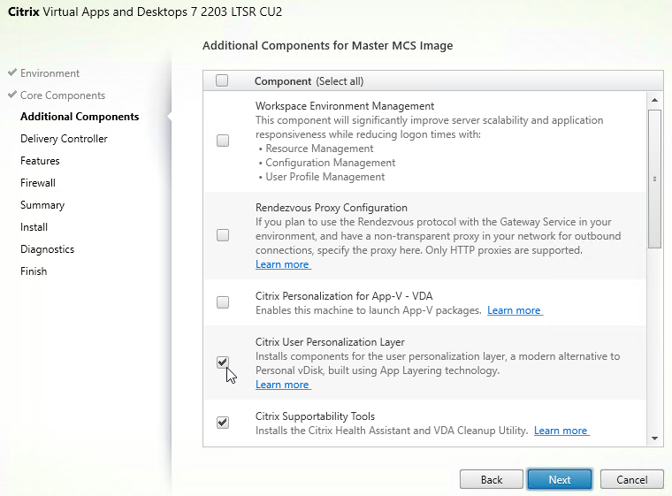
- Extract the downloaded .zip file.
- In the FSLogix \x64\Release folder, run FSLogixAppsSetup.exe.
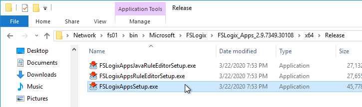
- Check the box next to I agree to the license terms and conditions and click Install.

- In the Setup Successful page, click Restart.

- Make sure the Windows Search service is set to Automatic and Running.

- If Office is already installed, then repair the Office installation after installing and starting the Windows Search Service.

FSLogix is configured through Group Policy or by editing registry values on each FSLogix Agent machine.
Windows OS Optimization Tool
- See Windows Operating System Optimization Tool Guide at Omnissa Tech Zone for details on this tool.
- Download the Windows OS Optimization Tool. Version 2503 supports Horizon 2503.
- Run VMwareOSOptimizationTool-x86_64.exe.
- On the Optimize tab, click Analyze on the bottom of the window.
- Near the middle of the window click the Common Options button and make your selections on each of the pages. Click OK when done.
- The top right box named Analysis Summary shows the number of optimizations not yet applied.
- Review the optimizations and make changes as desired. Then on the bottom right, click Optimize.
- The History tab lets you rollback the optimizations.
- The Finalize tab contains tasks that should be run every time you seal your parent image.
- The Update tab lets you re-enable Windows Update so you can update the parent image.


Seal and Snapshot
- Make sure the parent session host is configured for DHCP.
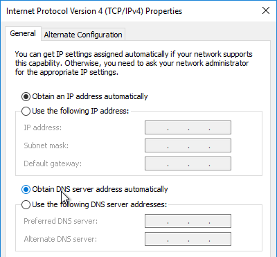
- Session hosts commonly have DHCP reservations.
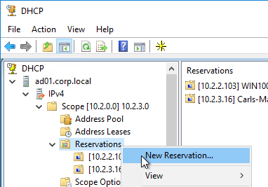
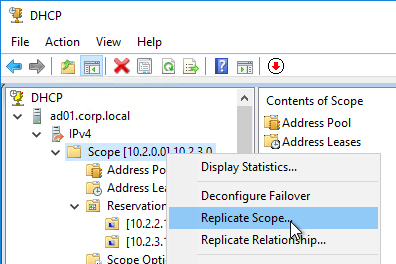
- The VMware OS Optimization Tool has a Finalize tab that contains tasks that should be run every time you seal your parent image.
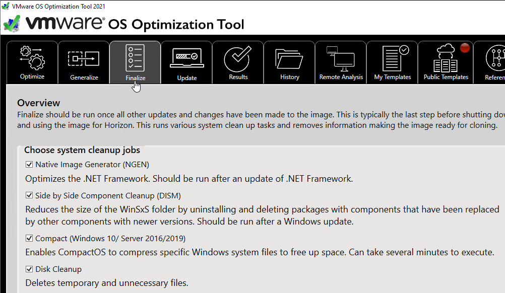
- Go to the properties of the C: drive, and on the Tools tab, click Optimize to defrag the drive.
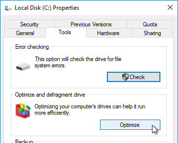
- Run Delprof2 to clean up local profiles. Get it from http://helgeklein.com/download/.
-
Run antivirus sealing tasks. For example:
- Symantec: Run a full scan and then run the Virtual Image Exception tool
- Symantec: run the ClientSideClonePrepTool
- Base Image Script Framework (BIS-F) automates many image sealing tasks. The script is configurable using Group Policy.


- Shutdown the parent session host.
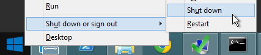
- Edit the Settings of the parent virtual machine and disconnect the CD-ROM. Make sure no ISO is configured in the virtual machine.
- If Instant Clones, take a snapshot of the master session host.
- Use can now use Horizon Console to create RDS Farms.
Full Clone Post-Cloning Tasks
If you use vCenter to clone the machine instead of using Horizon Instant Clones, then after the machine is cloned, do the following on the cloned machine:
- Static IP – Configure a static IP address (or DHCP reservation).
- Windows Update – Run Windows Update. SysPrep disables Windows Update so you must run it at least once to re-enable it.
- Join domain – Join the machine to the domain if SysPrep didn’t do it for you.
- Active Directory OU – Move the Active Directory computer object to the correct OU.
- Horizon Agent – for manual farms, uninstall the Horizon Agent and reinstall it so it registers with a Horizon Connection Server.
- Antivirus – Re-configure antivirus. Instructions vary based for each product. Go to the antivirus vendor’s website and search for a cloning procedure.
- Firewall rules – Add the new machine to any firewall rules (PCoIP, Blast) between the Horizon Security Server and Horizon Agents.
- Horizon Console – In Horizon Console, add the new machine to a Remote Desktop Services farm.
Related Pages
- Back to Omnissa Horizon 8